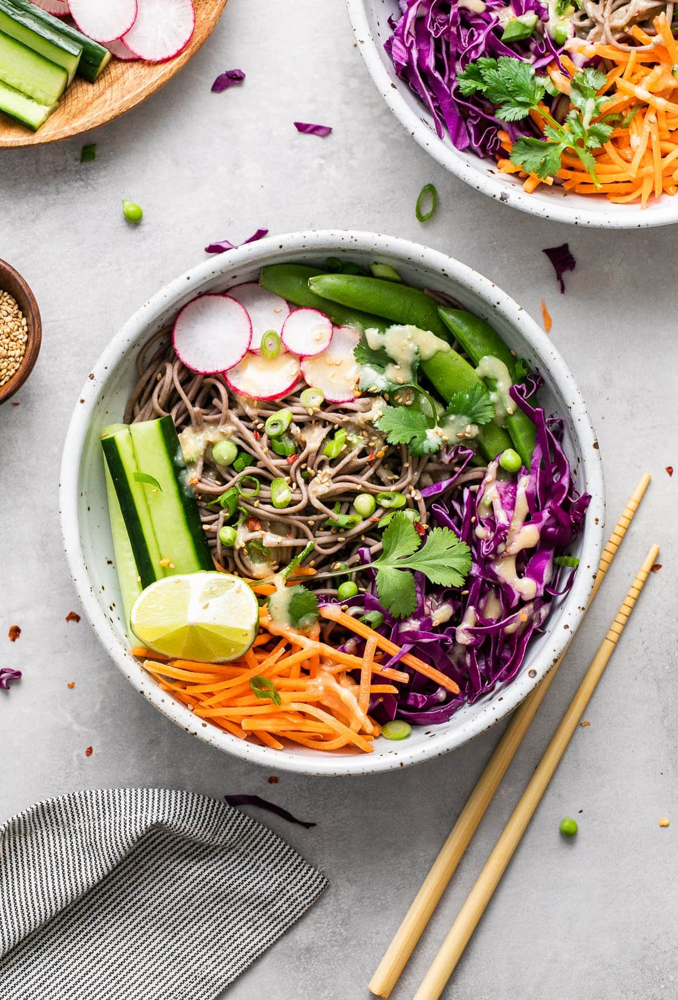

Vegan Soba Noodle Salad with Sesame and Citrus

Description
I was first introduced to soba noodles by my sister-in-law, who loves to make them with just tamari and green onion for seasoning.
I like to use them in all kinds of vegan recipes, especially fresh salads with a flavorful dressing.
Soba noodles are made with buckwheat, which is gluten-free and can be found in the Asian section of the grocery store, or Chinatown.
The longer the dressing sits, the better it will be, so make it ahead of time if you can.
Ingredients
- 1 lemon, zested and juiced
- 1 lime, zested and juiced
- 1 orange, zested and juiced
- 2 tablespoons rice vinegar
- 1 tablesoon miso paste
- 1 teasoon toasted sesame oil
- 1 cucumber, julienned
- 2 carrots, julienned
- 1 avocado, sliced
- 2 green onions, chopped
- toasted sesame seeds, for garnish
Steps
- Whisk lemon, lime, and orange zests and juices, rice vinegar, miso, and toasted sesame oil together in a small bowl. Set aside.
- Bring lightly salted water to a boil in a large pot. Add soba noodles; cook, stirring occasionally until tender, about 5 minutes. Drain and set aside.
- Top soba noodles with cucumber, carrots, avocado, green onions, and prepared dressing. Sprinkle with toasted sesame seeds. Serve hot or chilled.